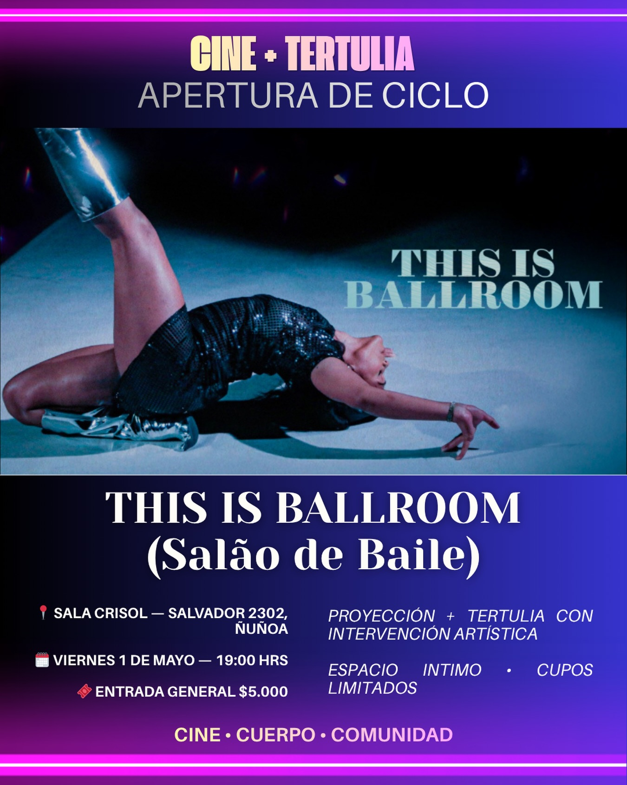
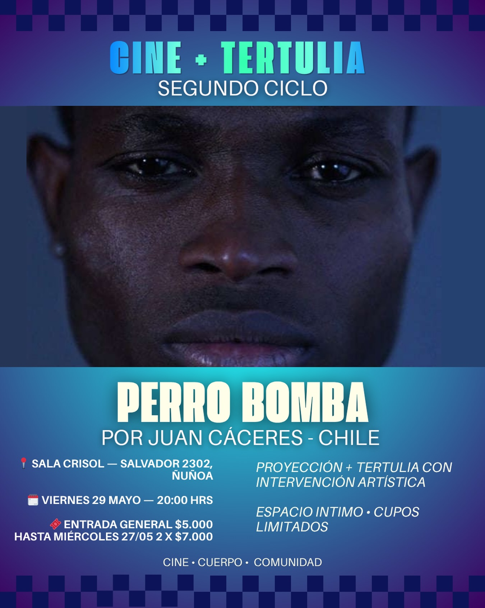
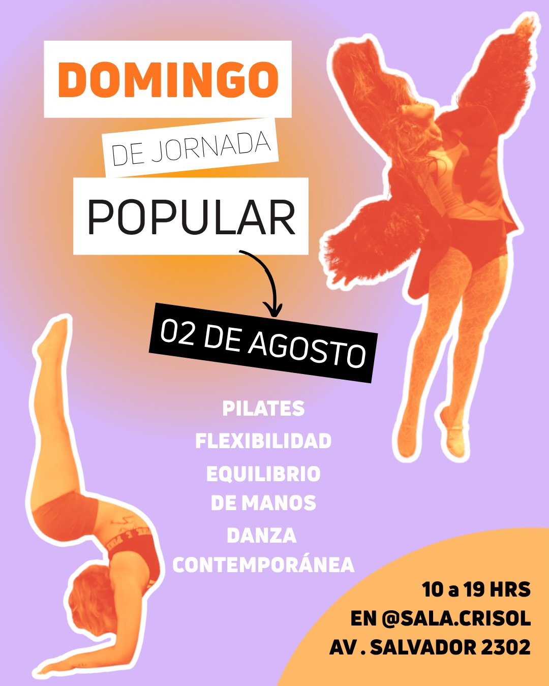

1
Escríbenos
Cuéntanos por WhatsApp o Instagram qué taller te llama. Te confirmamos cupo y respondemos cualquier duda — no hay preguntas tontas.
Ñuñoa · Santiago de Chile
Sala de artes y movimiento
Un crisol es el recipiente donde los metales se funden y se transforman. Acá pasa lo mismo con las personas: deporte, arte y cultura se mezclan en un espacio íntimo, autogestionado y de puertas abiertas, donde entrenar, crear y encontrarse es la misma cosa.
Grupos pequeños, profes que te conocen por tu nombre y cero requisito de experiencia. Entra a cada taller para ver horarios, cupos disponibles y de qué se trata.
Así se mueve la semana en la sala. Toca cualquier clase para ver el detalle e inscribirte.
🌙 Los bloques lila son encuentros mensuales (una vez al mes) y los Domingos Populares son jornadas especiales por el sostenimiento del espacio — se anuncian en Instagram.
Cuéntanos por WhatsApp o Instagram qué taller te llama. Te confirmamos cupo y respondemos cualquier duda — no hay preguntas tontas.
Llega 10 minutos antes con ropa cómoda y agua. La sala tiene tatamis, espejo y buena música. No necesitas experiencia previa: acá se llega a aprender.
Si te gustó, eliges tu plan mensual y pasas a ser parte del crisol: talleres, tertulias, domingos populares y gente que se mueve como tú.
cine · cuerpo · comunidad
Una vez al ciclo, la sala se apaga y se enciende de otra forma: proyectamos una película, conversamos y el cierre lo ponen artistas invitadxs en vivo. Junto a Cía. Ffrenesí, ya van tres ciclos.

Tertulia 01Apertura de ciclo. Proyección + tertulia con artistas invitadxs: música y danza en vivo, cruce entre disciplinas.
Viernes 1 de mayo · 19:00
Tertulia 02De Juan Cáceres (Chile). Un espacio más íntimo: música, danza y expresiones artísticas en atmósfera de escucha.
Viernes 29 de mayo · 20:00 Tertulia 03
Tertulia 03
De Elefante Gonorrea y sus amigxs. Proyección + tertulia con intervención artística. Espacio íntimo, cupos limitados.
Viernes 26 de junio · 19:30La cuarta tertulia se está cocinando. Entradas $5.000 (preventa 2×$7.000). Síguenos para enterarte primero.
Avisarme por Instagram →

Creemos que los espacios culturales y de movimiento se construyen entre todas y todos. Por eso, una vez al mes abrimos las puertas para una jornada completa de entrenamiento, encuentro y colaboración.


25 m² pensados para el movimiento: luz cálida, piso de linóleo y una energía que se nota apenas entras. También puedes arrendarla para tus propias clases, ensayos o talleres.
Av. Salvador 2302, Ñuñoa · Santiago
Abrir en Google Maps →
Monseñor Eyzaguirre (L3) a 4 minutos caminando, o Irarrázaval (L3/L5) a 8 minutos. Sí: llegar es realmente fácil.
Tenemos patio interior para dejarla segura mientras entrenas.
Abre según la grilla de clases y arriendos — revisa los horarios o escríbenos.
¿Quieres probar una clase, proponer un taller, arrendar la sala o traer tu proyecto? Escríbenos — respondemos rápido y sin letra chica.